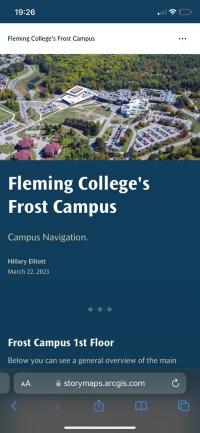

StoryMaps is effective in a wide range of use-cases. It is very popular due to its visual appeal, no coding, and straight-forwad approach. This solution is for developing a narrative about an idea, a map, and/ or a place.
Story Maps
Project Applicability Score: 3 / 5

StoryMaps for an immersive and interactive experience
What Worked Well
This web solution is a visually appealing solution for effectively displaying results.
- The main advantage of using StoryMaps is that the interface is very user-friendly.
- There are many different options for displaying information, which are easy to integrate. Such as still images, slideshows, map tours, as well as 2D and 3D interactive maps.
- It is also possible to embed 360 images, which help users explore different rooms on campus.
Many different options for displaying and interacting with information:
Embedding 360 images for better understanding a space:
Lessons Learned
StoryMaps overall is a great web map solution. Although there are some limitations.
- The main disadvantage is that is it not great for live navigation. Since it is more a solution to display results, there is location awareness or routing available.
- The interactivity with maps is limited. Users cannot turn on/ off layers when interacting with an embedded map. If you want to show things in categories so the map is not overwhelming, the layers that will be viewable need to be set before embedding the map. For example, if you wanted users to explore the first and second floors of a building separately, you would need to display each floor on its map as users cannot change between them on the same map.
- If using slideshows, once the StoryMap is downloaded in PDF format, the slideshow formatting does not transfer.
- Users must be connected to internet to access the StoryMap.